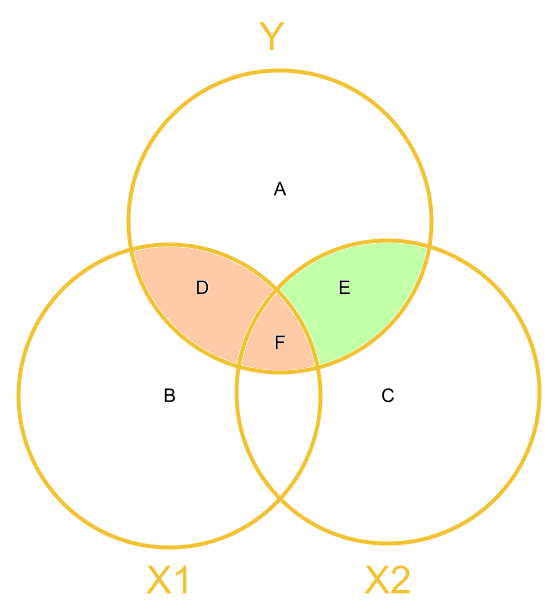
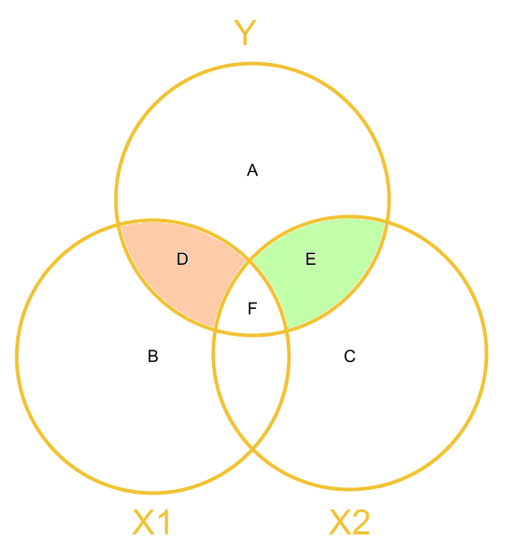

Sums of Squares
Another venn diagram way of thinking about sums of squares
In the lecture we saw some venn diagrams, where each circle was variance explained by each predictor.
It may also help to think of it in a slightly different visualisation. In Figure 1 we see the model \(y = b_0 + b_1(x1) + b_2(x2) + \varepsilon\) where the outcome variable, \(y\) included as a circle too. The “variance explained” by each predictor is the overlap between each predictor and the outcome variable.
Having multiple predictors introduces the likely scenario that our predictors (\(x1\) and \(x2\)) may be to some extent correlated. That is, knowing something about \(x1\) will tell us something about \(x2\), and vice versa. But this means that we have some joint overlap (\(F\) in the 1) which is variance explained in the outcome variable that is not unique to either predictor. We don’t want to double count this, we need to decide to which variable we want to attribute this explained variance.
In Figure 1:
- the total variance in \(y\) is represented by the combination of areas \(A + D + E + F\).
- the covariance between \(x1\) and \(y\) is \(D + F\)
- the covariance between \(x2\) and \(y\) is \(E + F\)
- the variance in \(y\) uniquely explained by \(x1\) is \(D\)
- the variance in \(y\) uniquely explained by \(x2\) is \(E\)
- the variance in \(y\) explained by \(x1\) and \(x2\) that is not unique to either predictor is \(F\).
Figure 1: Venn Diagram of variables in multiple regression model, with areas represents variance/shared variance
Types of Sums of Squares largely comes down to how we attribute the area \(F\). Type 1 Sums of Squares attributes it to whichever of \(x1\) and \(x2\) is first entered into the model. Type 3 Sums of Squares attributes it to neither. Let’s look at these in more depth.
Type 1 Sums of Squares
When we calculate Type 1 sums of squares, and \(x1\) is entered into our model first, then we are looking at:
- the effect of \(x1\) as \(D + F\)
- the effect of \(x2\) as \(E\)
We get these from functions like anova() which test the relative size of these areas to the area of A (after scaling each of these by how much information - the degrees of freedom - are used to create each - this is the mean squares bit).

model <- lm(y~x1+x2,data=df)
anova(model)| Df | Sum Sq | Mean Sq | F value | Pr(>F) | Areas in Diagram | |
|---|---|---|---|---|---|---|
| x1 | 1 | 347.430 | 347.430 | 16.597 | <.001 | (D + F) vs A |
| x2 | 1 | 98.683 | 98.683 | 4.714 | 0.032 | E vs A |
| Residuals | 97 | 2030.570 | 20.934 | A |
Type 3 Sums of Squares
When we calculate Type 3 Sums of Squares, we get:
- the effect of \(x1\) = \(D\)
- the effect of \(x2\) = \(E\)
We get these using functions like drop1(model) and the Anova(model, type = 3) (capital A) from the car package.

model <- lm(y~x1+x2,data=df)
library(car)
Anova(model, type = 3)## Anova Table (Type III tests)
##
## Response: y
## Sum Sq Df F value Pr(>F)
## (Intercept) 0.84 1 0.0399 0.8420458
## x1 301.25 1 14.3908 0.0002584 ***
## x2 98.68 1 4.7141 0.0323564 *
## Residuals 2030.57 97
## ---
## Signif. codes: 0 '***' 0.001 '**' 0.01 '*' 0.05 '.' 0.1 ' ' 1And these are also the effects that we see as the coefficients in functions like summary(),coef() and coefficients(), but the estimated coefficients are scaled to be in terms of “change in y for every 1 unit change in x.”
summary(model)##
## Call:
## lm(formula = y ~ x1 + x2, data = df)
##
## Residuals:
## Min 1Q Median 3Q Max
## -12.8542 -2.8235 0.1951 2.6019 11.6578
##
## Coefficients:
## Estimate Std. Error t value Pr(>|t|)
## (Intercept) 0.09489 0.47491 0.200 0.842046
## x1 1.82778 0.48182 3.794 0.000258 ***
## x2 -1.10289 0.50797 -2.171 0.032356 *
## ---
## Signif. codes: 0 '***' 0.001 '**' 0.01 '*' 0.05 '.' 0.1 ' ' 1
##
## Residual standard error: 4.575 on 97 degrees of freedom
## Multiple R-squared: 0.1801, Adjusted R-squared: 0.1632
## F-statistic: 10.66 on 2 and 97 DF, p-value: 6.558e-05Example
Data
library(tidyverse)
usmrsurv2 <- read_csv("https://uoepsy.github.io/data/usmrsurvey2.csv")
names(usmrsurv2)## [1] "id" "pseudonym" "catdog"
## [4] "gender" "height" "optimism"
## [7] "spirituality" "ampm" "extraversion"
## [10] "agreeableness" "conscientiousness" "emotional_stability"
## [13] "imagination" "internal_control"names(usmrsurv2)[9:14]<-c("E","A","C","ES","I","LOC")A model
Here is a model with two predictors, with the order of the predictors differing between the two models:
mymod1 <- lm(LOC ~ ES + optimism, data = usmrsurv2)
mymod2 <- lm(LOC ~ optimism + ES, data = usmrsurv2)Type 1 SS
Type 1 Sums of Squares is the “incremental” or “sequential” sums of squares.
If we have a model \(Y \sim A + B\), this method tests:
- the main effect of A
- the main effect of B after the main effect of A
- Interactions (which come in Week 9 of the course) are tested after the main effects1.
Because this is sequential, the order matters.
We can get the Type 1 SS in R using the function anova().
As you will see, the order in which the predictors are entered in the model influences the results.
This is because:
- for
mymod1(lm(LOC ~ ES + optimism)) we are testing the main effect ofES, followed by the main effect ofoptimismafter accounting for effects ofES.
- for
mymod2(lm(LOC ~ optimism + ES)) it is the other way around: we test the main effect ofoptimism, followed by the main effect ofESafter accounting for effects ofoptimism.
# mymod1 <- lm(LOC ~ ES + optimism, data = usmrsurv2)
anova(mymod1)## Analysis of Variance Table
##
## Response: LOC
## Df Sum Sq Mean Sq F value Pr(>F)
## ES 1 114.66 114.661 7.3357 0.009036 **
## optimism 1 16.80 16.797 1.0746 0.304527
## Residuals 54 844.05 15.631
## ---
## Signif. codes: 0 '***' 0.001 '**' 0.01 '*' 0.05 '.' 0.1 ' ' 1# mymod2 <- lm(LOC ~ optimism + ES, data = usmrsurv2)
anova(mymod2)## Analysis of Variance Table
##
## Response: LOC
## Df Sum Sq Mean Sq F value Pr(>F)
## optimism 1 31.81 31.813 2.0353 0.15944
## ES 1 99.64 99.644 6.3749 0.01454 *
## Residuals 54 844.05 15.631
## ---
## Signif. codes: 0 '***' 0.001 '**' 0.01 '*' 0.05 '.' 0.1 ' ' 1Type 3 SS
Type 3 Sums of Squares is the “partial” sums of squares.
If we have a model \(Y \sim A + B\), this method tests:
- the main effect of A after the main effect of B
- the main effect of B after the main effect of A
So the Type 3 will be equivalent to Type 1 only for the final predictor in the model.
One approach is to use the drop1() function. We can also get the same using the Anova() function (capital A) from the car package.
# mymod1 <- lm(LOC ~ ES + optimism, data = usmrsurv2)
drop1(mymod1, test = "F")## Single term deletions
##
## Model:
## LOC ~ ES + optimism
## Df Sum of Sq RSS AIC F value Pr(>F)
## <none> 844.05 159.62
## ES 1 99.644 943.70 163.99 6.3749 0.01454 *
## optimism 1 16.797 860.85 158.75 1.0746 0.30453
## ---
## Signif. codes: 0 '***' 0.001 '**' 0.01 '*' 0.05 '.' 0.1 ' ' 1Note that these results are the same as the Type 3 for optimism in the model lm(LOC ~ ES + optimism), and the Type 3 for ES in the model lm(LOC ~ optimism + ES). Take a look back up the page for confirmation of this.
Note that Type 3 SS are invariant to the order of predictors: We get the same when we switch around our predictors:
# mymod2 <- lm(LOC ~ optimism + ES, data = usmrsurv2)
drop1(mymod2, test = "F")## Single term deletions
##
## Model:
## LOC ~ optimism + ES
## Df Sum of Sq RSS AIC F value Pr(>F)
## <none> 844.05 159.62
## optimism 1 16.797 860.85 158.75 1.0746 0.30453
## ES 1 99.644 943.70 163.99 6.3749 0.01454 *
## ---
## Signif. codes: 0 '***' 0.001 '**' 0.01 '*' 0.05 '.' 0.1 ' ' 1The summary() function
Remember that we mentioned when we introduced the simple regression model (one predictor), the \(t\)-statistic for the coefficient test is the square root of the \(F\)-statistic for the test of the overall reduction in the residual sums of squares?
This does still hold for the multiple regression model, but it is a little more complicated. For a given coefficient \(t\)-statistic in a multiple regression model, the associated \(F\)-statistic is the one corresponding to the reduction in residual sums of squares that is attributable to that predictor only. This, in other words, is the Type 3 \(F\)-statistic.
Here are our model coefficients and \(t\)-statistics:
# mymod1 <- lm(LOC ~ optimism + ES, data = usmrsurv2)
summary(mymod1)$coefficients## Estimate Std. Error t value Pr(>|t|)
## (Intercept) 15.7589278 2.32636156 6.774066 9.587579e-09
## ES 0.1904987 0.07544910 2.524863 1.454432e-02
## optimism 0.0223095 0.02152114 1.036632 3.045273e-01Here are our Type 3 SS \(F\)-statistics:
drop1(mymod1, test = "F")## Single term deletions
##
## Model:
## LOC ~ ES + optimism
## Df Sum of Sq RSS AIC F value Pr(>F)
## <none> 844.05 159.62
## ES 1 99.644 943.70 163.99 6.3749 0.01454 *
## optimism 1 16.797 860.85 158.75 1.0746 0.30453
## ---
## Signif. codes: 0 '***' 0.001 '**' 0.01 '*' 0.05 '.' 0.1 ' ' 1We can square-root them to get back to the \(t\)-statistic:
sqrt(drop1(mymod1, test = "F")$`F value`)## [1] NA 2.524863 1.036632What this means is that just like the drop1() \(F\) test for reduction in residual sums of squares uses Type 3 SS, the coefficients produced in summary() for a linear model are also invariant to the order of predictors.
So a model \(Y \sim A + B + A:B\) will (in addition to the two above) test 1) the main effect of A 2) the main effect of B after the main effect of A and 3) the effect of the interaction A:B after the main effects of A and B.↩︎

This workbook was written by Josiah King, Umberto Noe, and Martin Corley, and is licensed under a Creative Commons Attribution 4.0 International License.